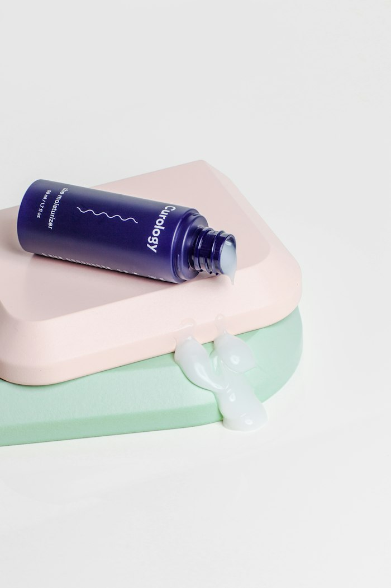

NHS Healthcare
Learn about the National Health Service (NHS) and the healthcare services available across the UK.

Accessing reliable healthcare services in the UK can sometimes feel confusing, especially when you need clear information about treatment options, medicines, and available support. Busy schedules and difficulty finding trustworthy health resources can make it harder to understand your healthcare needs.
RealMeds aims to make healthcare information easier to access by providing helpful medicines and guidance to support informed decisions. Our goal is to help people better understand their options and find relevant healthcare information with greater confidence.

RealMeds provides healthcare information across a range of health conditions to help you better understand your needs and available options. Explore our healthcare categories to find relevant information and support for your well-being.
Explore information about anxiety, panic disorders, and seizure-related healthcare.

Learn about seizure-related conditions and the importance of appropriate medical care.
Explore information about nerve-related pain and available treatment options.
Learn about ADHD and the healthcare options used to manage its symptoms.

Find information about sleep difficulties and treatments used for sleep-related conditions.

Understand different approaches to pain relief and pain management.
Explore information about common digestive problems and available treatment options.
Learn about common allergies, their symptoms, and ways to manage them.

Discover information about common skin concerns and suitable skincare approaches.
No matching categories. Try a broader search term.
RealMeds provides helpful healthcare information to help you understand common health conditions, treatment options, and healthcare services in the UK. Our informations includes:
Learn about the National Health Service (NHS) and the healthcare services available across the UK.
Learn about medicine uses, potential side effects, and the importance of following professional medical advice.
Discover how digital healthcare services can help people access health information and support.
Find information about mental health conditions and available support services.
Understand patient confidentiality, informed consent, and access to healthcare information.
Making informed healthcare decisions starts with understanding your health and knowing where to find reliable information. RealMeds offers general health guidance to help you learn about common health concerns, healthy habits, and available healthcare support.
Online medicine services make it easier for people across the UK to access pharmacy information and manage medicine-related needs. They can save time, reduce unnecessary trips, and offer convenient access to healthcare support.
Explore healthcare informationAccess pharmacy services online without always needing to visit a physical pharmacy.
Save time by managing eligible prescriptions and medicine requests online.
Read useful information about medicines, their uses, and potential side effects.
Online services can help people with busy schedules or limited mobility access pharmacy support.
Discuss sensitive health concerns through appropriate, secure services while protecting personal information.
RealMeds aims to make healthcare information easier to understand and access. We focus on providing helpful guidance so you can make informed decisions about your health.
Understand common health conditions and available treatment options.
Find healthcare information conveniently from home.
Learn about medicine uses, precautions, and potential side effects.
We value the importance of protecting your personal information.
We encourage safe medicine use and consultation with qualified healthcare professionals.